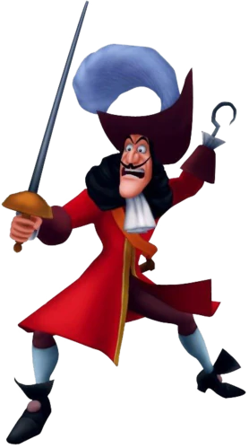

Captain Hook
Captain Hook is very arrogant and full of himself, and gets angry if someone insults him. He tends to hold a grudge against Peter Pan for stealing his hand and feeding it to the crocodile. In the Disney movies, he is portrayed as an excellent manipulator and liar. Three examples are when he manipulated Tinker Bell in the first movie and Jane, Wendy's daughter in the second movie, and Terra in Kingdom Hearts Birth By Sleep.He is cowardly and sometimes acts like a wimp, particularly when he hears the sound of the Crocodile coming close by. However, he is also an excellent sword fighter and a bomb expert, which makes him quite a challenge for Sora and Ventus when they fight him.
Captain Hook is a thin man with curly, black, shoulder-length hair that drapes over his shoulders, a large, hooked nose, a thin, black mustache that angles upward sharply, and a large chin. He wears a frilly, white shirt underneath a red coat with gold lining and maroon cuffs. Each of these cuffs sports two yellow buttons. He also wears an orange sash over his right shoulder that holds his sword scabbard at his left hip.Hook wears maroon pants and white, knee-high socks, as well as black shoes with a pink circle decorating each one. The tongues of his shoes are enormous, reaching halfway up his shins. He wears a large, maroon hat with a huge, white feather stuck in it. He carries a rapier with a gold handle and guard as a weapon.